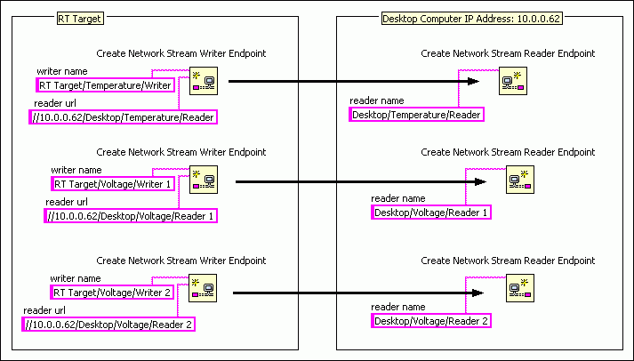

You can organize endpoints by adding segments to their names that describe the data they stream, the computer on which they reside, or other characteristics. When you have multiple endpoints on different computers, organizing endpoints in this way helps ensure that you connect each writer endpoint to its corresponding reader endpoint.
Complete the following steps to organize endpoints by name.
For example, assume you have three writer endpoints within the same application on a real-time (RT) target. One measures temperature, and the other two measure voltage signals. These endpoints connect to three corresponding reader endpoints in an application on a desktop computer. The following figure shows examples of names that you could assign to each endpoint. The arrows indicate the reader endpoint to which each writer endpoint connects.

In the figure above, the name of each endpoint describes the target the endpoint resides on, the type of data the endpoint streams, and whether the endpoint reads or writes that data. This naming scheme shows which endpoints correspond with each other.
|
Note��The name of one endpoint cannot be the partial name of another endpoint within the same application. For instance, in the above example, if you name one of the writer endpoints RT Target/Voltage and the other RT Target/Voltage/Writer 1, these endpoints will return an error instead of creating network streams. |